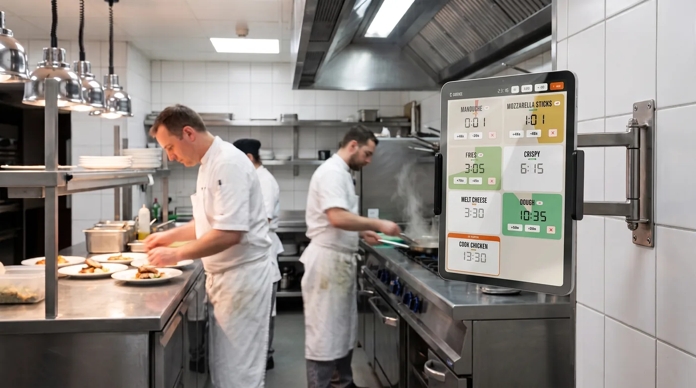

Le minuteur de cuisine qui vous dit, à voix haute, quand c'est prêt
Tous vos plats sur une seule tablette. Une sonnerie différente pour chacun, une voix qui l'appelle par son nom. D'une simplicité déconcertante.
Fait par des restaurateurs, pour des restaurateurs— et les amateurs de cuisine en tout genre.

Fini les plats cramés et le stress du coup de feu
Dix boîtiers sur le passe, dix bips identiques. On sait plus lequel sonne, on lâche le poste pour aller voir, et le poisson est mort. On en a eu marre, alors on l'a codé.
- « Ça sonne… mais lequel ? Ils font tous le même bruit »
- « J'ai vérifié le mauvais minuteur, le poisson a brûlé »
- « Dans le bruit du service, on n'entend pas le bip »
- « L'extra ne sait pas quel minuteur est à lui »
Une voix qui nomme le plat, une sonnerie différente pour chacun : vous savez tout de suite lequel est prêt.
Télécharger maintenantDes rappels à voix haute, à chaque poste
Chaque plat s'enchaîne tout seul, phase par phase
Un plat, c'est rarement un seul décompte. Il faut saisir, retourner, laisser reposer. L'app enchaîne les phases sans que vous touchiez à rien et annonce chaque changement d'étape à voix haute : « retournez le poisson », puis « le poisson est prêt ». Vous gardez les mains dans le plat, l'info arrive à l'oreille.
- Étapes de cuisson nommées : saisir, retourner, repos
- Annonce vocale de l'étape suivante et du plat prêt, par son nom
- Mains libres : vous ne quittez jamais le poste
Chaque plat a sa propre sonnerie de minuteur
Frites, poisson, bavette, focaccia : chaque plat a sa propre sonnerie. Dès que ça sonne, vous savez ce qui est prêt sans lever les yeux. Fini les dix bips identiques — douze sonneries au choix, et la voix nomme le plat par-dessus.
- Vous savez quel plat sonne à l'oreille, sans regarder l'écran
- Réglé une fois, valable pour toute la brigade
La mise en place, mais pour le temps : vos recettes, vos temps de cuisson
Le restaurant enregistre ses propres cuissons une bonne fois. On choisit le plat, tout part avec les bons temps et les bonnes phases. L'app répète votre méthode, elle n'invente aucun temps. Le poisson cuit pareil que ce soit le chef ou l'extra du samedi.
- Vos plats, vos noms, vos temps de cuisson enregistrés
- La même cuisson à chaque service, quel que soit le poste
- Un nouveau opérationnel en cinq minutes, guidé à la voix
- Français et anglais pour toute la brigade
Minuteur classique VS notre app : ce qui change ?
Ce qui change, ligne par ligne, entre les boîtiers classiques et notre app.
Pour ceux qui vivent le coup de feu
Fait par des restaurateurs, testé en plein service
« On a cuisiné cette app pour notre propre cuisine, à Lyon. On s'en sert à chaque service. Aujourd'hui on l'ouvre aux autres cuisines — pros comme passionnés. »
Les questions qu'on nous pose
Quelle est la meilleure application de minuteur pour une cuisine professionnelle ?
Celle qui fait tourner plusieurs minuteurs en même temps, un par plat, qui annonce à voix haute quand c'est prêt et qui répète vos temps de cuisson. La plupart des applications de minuteur sont pensées pour le téléphone d'un particulier. Celle-ci est faite pour une tablette montée en ligne de cuisine, en plein service.
Comment gérer plusieurs minuteurs en même temps sans se tromper de plat ?
Faites tourner plusieurs minuteurs côte à côte : chaque cuisson porte son nom à l'écran et à la voix, et chacune peut avoir sa propre sonnerie. Cinq ou vingt plats peuvent tourner en parallèle : vous savez tout de suite lequel sonne. Impossible de confondre le minuteur du poisson avec celui de la garniture.
L'application fonctionne-t-elle sur iPad, tablette Android et iPhone ?
Oui, sur les trois. Un iPad ou une tablette Android bas de gamme, montée au mur, écran toujours allumé, suffit — et l'app tourne aussi sur iPhone et téléphone Android quand vous voulez un minuteur dans la poche. Vous équipez chaque poste avec la même app.
Le minuteur annonce-t-il vocalement quand le plat est prêt ?
Oui, c'est un minuteur qui parle : l'app annonce à voix haute l'étape suivante puis le plat prêt, par son nom. Vous gardez les mains dans le plat, l'info arrive à l'oreille sans fixer l'écran.
Peut-on enregistrer ses propres recettes et temps de cuisson ?
C'est tout le principe. Vous saisissez vos plats, vos temps et vos phases une bonne fois. L'app répète votre méthode maison à l'identique sur toutes les tablettes. Elle n'invente aucun temps.
L'application fonctionne-t-elle sans connexion internet, en hors-ligne ?
Oui. Chaque tablette est autonome et stocke tout en local. Si le wifi tombe en plein rush, le service continue sans interruption.
Peut-on enchaîner plusieurs étapes de cuisson dans un même minuteur ?
Oui, c'est le cœur de l'app. Un plat peut avoir plusieurs phases nommées (saisir, retourner, repos) qui s'enchaînent automatiquement, avec une annonce vocale à chaque changement d'étape.
L'application est-elle disponible sur l'App Store et Google Play, et est-elle gratuite ?
Elle arrive bientôt sur l'App Store et Google Play. Elle est gratuite, sans compte à créer et sans abonnement.
Bientôt sur vos tablettes et téléphones. Gratuit.
Le minuteur arrive sur l'App Store et Google Play. Gratuit, sans compte à créer.